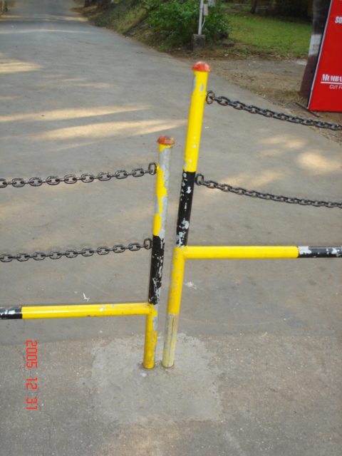

The Culture of Roadblocks and Cutting Corners
With increasing numbers of students with motorcycles and faculty
members with cars, IIT wanted to mark a core academic area as out of
bounds for cars, scooters, and motorcycles; allowing only pedestrians
and bicyclists. In a literate and civilized country, a sign saying
PEDESTRIANS AND CYCLISTS ONLY would be adequate. Not
in India, where, even inside IIT, a large fraction of people cannot
read, and, irrespective of literacy, no one is in the habit of
following instructions. Therefore it was necessary for IIT to put up
barricades.
The barricades could have
been designed in many ways, but we have an eye for the ugly. Observe
the H-shape and the meaningless chains above: if there is one rigid
bar at the bottom, it would be much simpler and cheaper to just weld
three horizontal bars. But why is one piece sticking out like a sore
thumb?
 You see, the vertical tubes
are inserted into slightly larger tubes embedded in the ground.
Thanks to current Indian standards of craftsmanship, the alignment is
never quite right. Straight lines, parallel lines, right angles and
perfect circles elude all but the most highly-paid contractors in
Mumbai. Moreover, the tubes rust, soon making it impossible to lower
some of the barriers to their planned position. Needless to say no
two barriers have the same dimensions.
 Rumor has it that the
barricades were designed to let through bicycles. (There was no
official notice about these barricades.) But as you can see, even the
shortest handle-bars do not pass through the gap. In some places the
handlebar barely clears the caps, in most places, they get stuck. The
barriers never had metal primer applied below the cheap enamel paint.
You can see the paint peeling off all over within a year of deployment,
not only where evil bicyclists like me were brushing past,
but also the top cap where there is at worst palm contact.
Rumor has it that the
barricades were designed to let through bicycles. (There was no
official notice about these barricades.) But as you can see, even the
shortest handle-bars do not pass through the gap. In some places the
handlebar barely clears the caps, in most places, they get stuck. The
barriers never had metal primer applied below the cheap enamel paint.
You can see the paint peeling off all over within a year of deployment,
not only where evil bicyclists like me were brushing past,
but also the top cap where there is at worst palm contact.
Not all cyclists are in
favor of getting their knuckles bruised trying to navigate past these
barriers. They just cut corners, a term that should
have been invented and copyrighted in India! The final result of the
exercise is an ugly artifact and destruction of some grass, with
success at stopping cars but little else. You still routinely have to
negotiate with bulls larger than the average Korean---oops---Indian
tinbox car.